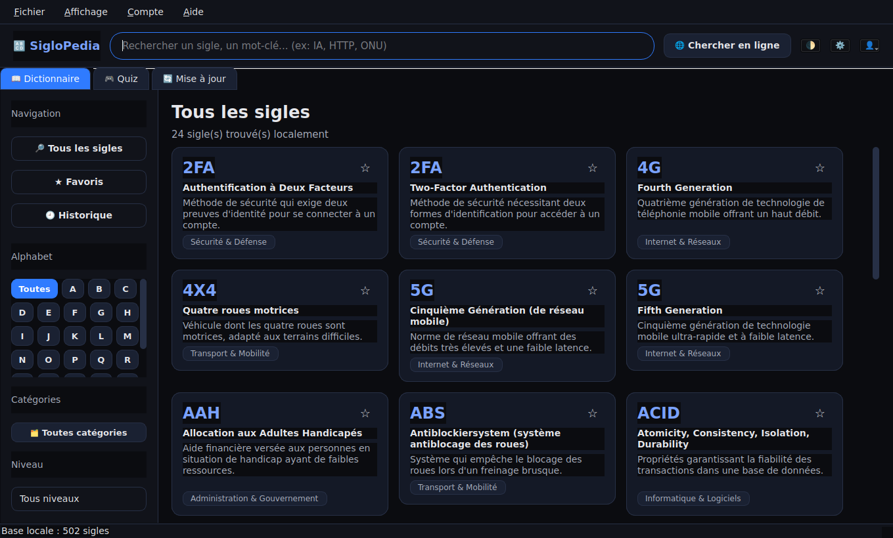
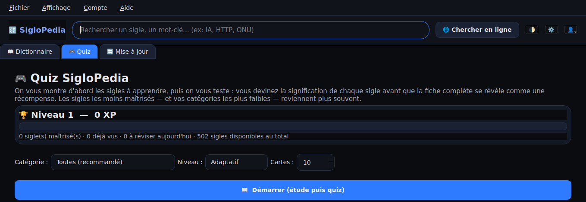
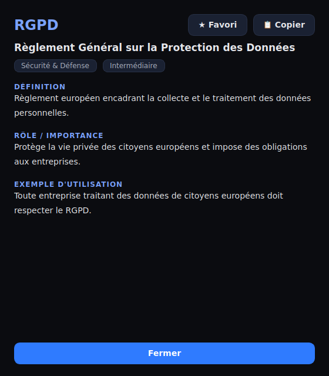

Instantanée et hors-ligne
Base locale de plus de 500 sigles : les résultats s'affichent immédiatement, sans connexion requise.
Application Windows · Gratuite
SigloPedia Desktop est un dictionnaire de plus de 500 sigles et acronymes qui fonctionne entièrement hors-ligne, et sait s'enrichir automatiquement en interrogeant des sources ouvertes quand vous en avez besoin — sans jamais afficher un résultat confus ou dupliqué. Installation simple, en quelques secondes, sur n'importe quel ordinateur Windows.
N° 01 / 08
Règlement Général sur la Protection des Données
Règlement européen encadrant la collecte et le traitement des données personnelles.
Fonctionnalités
Six choses que SigloPedia fait particulièrement bien — et qu'on ne trouve pas toujours ensemble dans un simple lexique en ligne.
Base locale de plus de 500 sigles : les résultats s'affichent immédiatement, sans connexion requise.
Sigle introuvable localement ? SigloPedia interroge Wikidata et le Wiktionnaire, puis affiche uniquement les meilleurs résultats — triés, dédupliqués, sans doublons redondants.
Marquez les sigles utiles, retrouvez vos dernières recherches en un clic.
Un mode quiz intégré fait revenir plus souvent les sigles les moins maîtrisés, pour mieux les retenir.
Comptes, favoris et historique restent stockés sur votre ordinateur. Rien n'est envoyé ailleurs, sauf le texte d'une recherche en ligne explicitement lancée.
L'application vous prévient dès qu'une nouvelle version est disponible, et votre base de sigles peut être enrichie à tout moment.
Aperçu
Interface sombre, épurée, pensée pour lire des définitions confortablement — capture d'écran de l'application, sans retouche.



Installation
Cliquez sur « Télécharger pour Windows » ci-dessous. Le fichier SigloPedia-Setup.exe se télécharge directement.
Double-cliquez sur le fichier téléchargé et suivez les instructions à l'écran. Aucune configuration technique requise.
SigloPedia se lance et fonctionne immédiatement, hors-ligne comme en ligne. Vos données restent sur votre ordinateur.
Télécharger
Version actuelle : 1.1.0. Fonctionne simplement sur Windows, sans configuration particulière.
Transparence
Comptes, favoris, historique et progression sont stockés uniquement sur votre ordinateur, dans une base locale.
L'enrichissement en ligne utilise Wikidata et le Wiktionnaire (projets Wikimedia), toujours cités comme source.
Aucun traceur, aucun outil d'analyse, aucune publicité sur ce site. Voir notre politique de confidentialité.